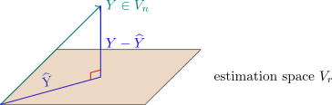

3.3 Estimation of Parameters in a Linear Model
This is the centre of the course. The least squares estimator is derived, its mean and variance obtained, its distribution established under normality, and its optimality proved.
The order of the argument matters. Unbiasedness needs only \(E\left (\underline {\varepsilon }\right )=\underline {0}\); the variance formula needs \(\text {Var}\left (\underline {\varepsilon }\right )=\sigma ^2I\); the Gauss–Markov theorem needs those two and nothing else — in particular not normality, which is why least squares is used so widely. Normality enters only where the sampling distributions are required, for tests and intervals.
\[\underbrace {Y}_{N\times 1} = \underbrace {X}_{N\times K} \underbrace {B}_{K\times 1} + \underbrace {\varepsilon }_{N\times 1}\quad \varepsilon \thicksim N\big (0,\Sigma \big )\] We want to “minimise” the error vector \begin {align*} ||\varepsilon ||^2 & = \varepsilon ^t\varepsilon = (Y-XB)^t(Y-XB)\\ & = \big (Y^t-B^tX^t\big )\big (Y-XB\big )\\ & = Y^tY-Y^tXB-B^tX^tY+B^tX^tXB\\ & = Y^tY-2Y^tXB+B^tX^tXB\\ \end {align*}
\begin {align*} L(B) & = Y^tY-2Y^tXB+B^tX^tXB\\ \frac {\partial L(B)}{\partial B} & = 0-2X^tY+2X^tXB \end {align*}
Setting the derivative to zero gives \begin {equation} \label {eq:normal} X^tX\widehat {B}=X^tY . \end {equation}
Equation (2) is known as the normal equations.
The normal equations (2) do not always have a unique solution.
When does (2) have a unique solution?
Recall that \(Y=XB+\varepsilon ,\quad E(\varepsilon )=0\quad \implies \quad E(Y)=XB\)

\begin {align*} \widehat {Y} & = X\widehat {B}\\ Y & = X\widehat {B} \end {align*}
Definition 3.3.1. A matrix whose columns are linearly independent is known as full column
rank.
Since the mean vector \(\big (XB\big )\) of \(Y\) lies in the estimation space say \(V\) which is spanned by the columns of the design matrix \(X\) then the solution of (2) must satisfy \(X\widehat {B}=P_vY\), where \(P_vY\) is the projection of \(Y\) on the space \(V\), \(P_v\) is known the projection matrix on \(V\).
Theorem 3.3.2. If \(V\) is the subspace spanned by the linearly independent vectors of the design matrix \(X\) i.e \(X\) if full column rank matrix then the projection matrix on the space \(V\) is \[P_v=X\big (X^tX\big )^{-1}X^t.\]
Proof.
\(P_v^t = X\big (X^tX\big )^{-1}X^t=P_v\)
\begin {align*} P_v^2 & = P_v\, P_v = X\big (X^tX\big )^{-1}X^tX\big (X^tX\big )^{-1}X^t\\ & = XI\big (X^tX\big )^{-1}X^t\\ & = X\big (X^tX\big )^{-1}X^t\\ & = P_v \end {align*}
\begin {align*} X^tX\widehat {B} & = X^tY\\ \big (X^tX\big )^{-1}X^tX\widehat {B} & = \big (X^tX\big )^{-1}X^tY\\ \widehat {B} & = \big (X^tX\big )^{-1}X^tY\\ X\widehat {B} & = X\big (X^tX\big )^{-1}X^tY \end {align*}
\[\widehat {B} =\big (X^tX\big )^{-1}X^tY\] \[E\big (\widehat {B}\big )=\big (X^tX\big )^{-1}X^tE(Y)=\big (X^tX\big )^{-1}X^tXB=B\] \begin {align*} Cov\big (\widehat {B}\big ) & = \big (X^tX\big )^{-1}X^t\Sigma _YX\big (X^tX\big )^{-1},\quad \Sigma = \sigma ^2I\\ & = \big (X^tX\big )^{-1}X^t\Sigma X\big (X^tX\big )^{-1}\\ & = \big (X^tX\big )^{-1}X^t\sigma ^2IX\big (X^tX\big )^{-1}\\ & = \sigma ^2\big (X^tX\big )^{-1}X^tX\big (X^tX\big )^{-1}\\ & = \sigma ^2\big (X^tX\big )^{-1}\\ \end {align*} □
Theorem 3.3.3. If \(Y=XB+\varepsilon \quad \varepsilon \thicksim N(0,\sigma ^2I)\), and \(X\) has full column rank \(\big (E(Y)=XB,\quad Cov(Y)=\sigma ^2I\big ).\)
- i.
- The least squares estimators of \(B\) \(\Big (\widehat {B}=\big (X^tX\big )^{-1}X^tY\Big )\) is unbiased.
- ii.
- \(Cov\big (\widehat {B}\big )=\sigma ^2\big (X^tX\big )^{-1}\)
- iii.
- \(\min ||Y-XB||^2\) is achieved when \(\widehat {B}=\big (X^tX\big )^{-1}X^tY.\)
Proof.
- (i)
- and (ii) already
- iii).
- The minimum of \(||Y-XB||^2\) is achieved when \(X\widehat {B}\) is the projection of \(Y\) on the vector space spanned by the column of \(X\). The projection of \(Y\) on the space spanned the column of \(X\) is given by \(P_vY\) where \(P_v=X\big (X^tX\big )^{-1}X^t\), therefore \(X\widehat {B}=X\big (X^tX\big )^{-1}X^tY\). \begin {align*} X^tX\widehat {B} & = X^tX\big (X^tX\big )^{-1}X^tY=X^tY\\ \big (X^tX\big )^{-1}X^tX\widehat {B} & = \big (X^tX\big )^{-1}X^tY\\ \implies \quad \widehat {B} & = \big (X^tX\big )^{-1}X^tY\\ \end {align*}
Theorem 3.3.4 (Gauss-Markov theorem). Let \(Y=XB+\varepsilon \), be a linear model. If \(E(Y)=XB\) and \(Cov(Y)=\Sigma _Y\) which is non-singular and \(X\) is full column rank then the least squares estimator of \(B, \, \widehat {B}=\big (X^tX\big )^{-1}X^tY\) has “minimum variance” within the classes of linear unbiased estimators of \(B\) i.e \(\widehat {B}\) is BLUE (Best Linear Unbiased Estimator).
Corollary 3.3.5. Let \(X= \begin {pmatrix} x_1 & x_2 & \cdots & x_k\\ \end {pmatrix} \) \(\big (x_j\) is the \(j^{\text {th}}\) column of matrix \(X\), \(j=1,2,\ldots ,k\big )\) be the design matrix with orthogonal columns \(\big (\) i.e \(x^t_jx_{j'}=0\), if \(j\neq j'\big )\), then the least squares estimators of \(B\), the components are given \[\widehat {B}_j=\frac {X_j^tY}{X^t_jX_j}=\frac {X^t_jY}{||X_j||^2}\, j=1,2,\ldots ,k\qquad \text {and they are independent.}\]
Proof. \begin {align*} \underbrace {X^tX}_{k\times k} & = \begin {pmatrix} X^t_1X_1 & 0 & \cdots & 0\\ 0 & X^t_2X_2 & \cdots & 0\\ \vdots & \vdots & & \vdots \\ 0 & 0 & \cdots & X_k^tX_k\\ \end {pmatrix}\\ \big (X^tX\big )^{-1} & = \begin {pmatrix} \frac {1}{X^t_1X_1} & 0 & \cdots & 0\\ 0 &\frac {1}{X^t_2X_2} & \cdots & 0\\ \vdots & \vdots & & \vdots \\ \vdots & \vdots & & \vdots \\ 0 & 0 & \cdots & \frac {1}{X^t_kX_k} \end {pmatrix}\\ \widehat {B} & = \big (X^tX\big )^{-1}X^tY\\ \end {align*}
\(j^{\text {th}}\) component of \(\widehat {B}\) which is \(\widehat {B}_j\)
\(j^{\text {th}}\) row of matrix \(\big (X^tX\big )^{-1}X^t\) into \(Y\).
\[\widehat {B}_j=\frac {X^t_jY}{X_j^tX_j}\]
\(\bullet \) \(\quad Y_{ij}=\mu _j+\varepsilon _{ij},\quad \varepsilon _{ij}\thicksim ^{iid} N(0,\sigma ^2)\quad i=1,2,\ldots ,n_j\)
\[Y=XB+\varepsilon \quad B= \begin {pmatrix} \beta _1 & \beta _2 & \cdots & \beta _4\\ \end {pmatrix}^t\quad k=4\] \[ \underbrace {X}_{N\times 4} = \begin {pmatrix} 1_{n_1} & 0 & 0 & 0\\ 0 & 1_{n_2} & 0 & 0\\ 0 & 0 & 1_{n_3} & 0\\ 0 & 0 & 0 & 1_{n_4}\\ \end {pmatrix}\qquad ,\qquad \underbrace {X^tX}_{4\times 4} = \begin {pmatrix} n_1 & 0 & 0 & 0\\ 0 & n_2 & 0 & 0\\ 0 & 0 & n_3 & 0\\ 0 & 0 & 0 & n_4\\ \end {pmatrix} \] \begin {align*} \big (X^tX\big )^{-1} & = \begin {pmatrix} \frac {1}{n_1} & 0 & 0 & 0\\ 0 & \frac {1}{n_2} & 0 & 0\\ 0 & 0 & \frac {1}{n_3} & 0\\ 0 & 0 & 0 & \frac {1}{n_4}\\ \end {pmatrix}\\ \end {align*}
\begin {align*} \underbrace {X^t}_{4\times N} & = \begin {pmatrix} 1^t_{n_1} & 0 & \cdots & 0\\ 0 & 1^t_{n_2} & \cdots & 0\\ 0 & \cdots & 1^t_{n_3} & 0\\ 0 & 0 & \cdots & 1^t_{n_4}\\ \end {pmatrix}\\ X^tY & = \begin {pmatrix} 1^t_{n_1} & 0 & \cdots & 0\\ 0 & 1^t_{n_2} & \cdots & 0\\ 0 & \cdots & 1^t_{n_3} & 0\\ 0 & 0 & \cdots & 1^t_{n_4}\\ \end {pmatrix} \begin {pmatrix} Y^*_1\\ Y^*_2\\ Y^*_3\\ Y^*_4\\ \end {pmatrix} \end {align*}
\(Y^*_j\) observations from the \(j^{\text {th}}\) treatment. □
Corollary 3.3.6. If \(V\thicksim N\big (XB,\sigma ^2I\big )\) where \(X\) is full column rank, then
- i).
- The least squares estimators \(\widehat {B}\) is mle of \(B\).
- ii).
- \(\widehat {B}\thicksim N\big (B,\sigma ^2\big (X^tX\big )^{-1}\big )\).
\[Y=XB + \varepsilon \] \[\widehat {Y}=X\widehat {B}\] \[\widehat {\varepsilon } =Y-\widehat {Y}\] \begin {align*} \text {SSE}\, = \widehat {\varepsilon }^t\widehat {\varepsilon } & = \big (Y-\widehat {Y}\big )^t\big (Y-\widehat {Y}\big )\\ & = \big (Y-X\widehat {B}\big )^t\big (Y-X\widehat {B}\big )\\ & = \big (Y-X\big (X^tX\big )^{-1}X^tY\big )^t\big (Y-X\big (X^tX\big )^{-1}X^tY\big )\\ & = \big [\big (I-X\big (X^tX\big )^{-1}X^t\big )Y\big ]^t\big (\big (I-X\big (X^tX\big )^{-1}X^t\big )Y\big )\\ & = Y^t\big (I-H\big )^t\big (I-H\big )Y,\quad H=X\big (X^tX\big )^{-1}X^t\\ & = Y^t\big (I-H\big )\big (I-H\big )Y\\ & = Y^t(I-H)Y \end {align*}
SSE \(=Y^t\big (I-H\big )Y\), where \(H^2=H=P_v\) \[\text {MSE}=\frac {\text {SSE}}{N-K}=\frac {Y^t\big (I-H\big )Y}{N-K}\thicksim \frac {\chi ^2_{N-K}}{N-K}\]
Questions on this section
Stuck on something here? Ask below and it stays attached to this topic.